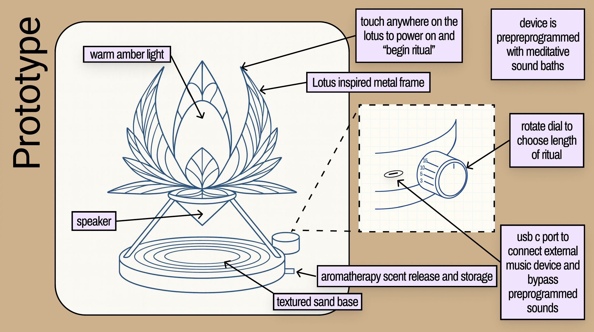
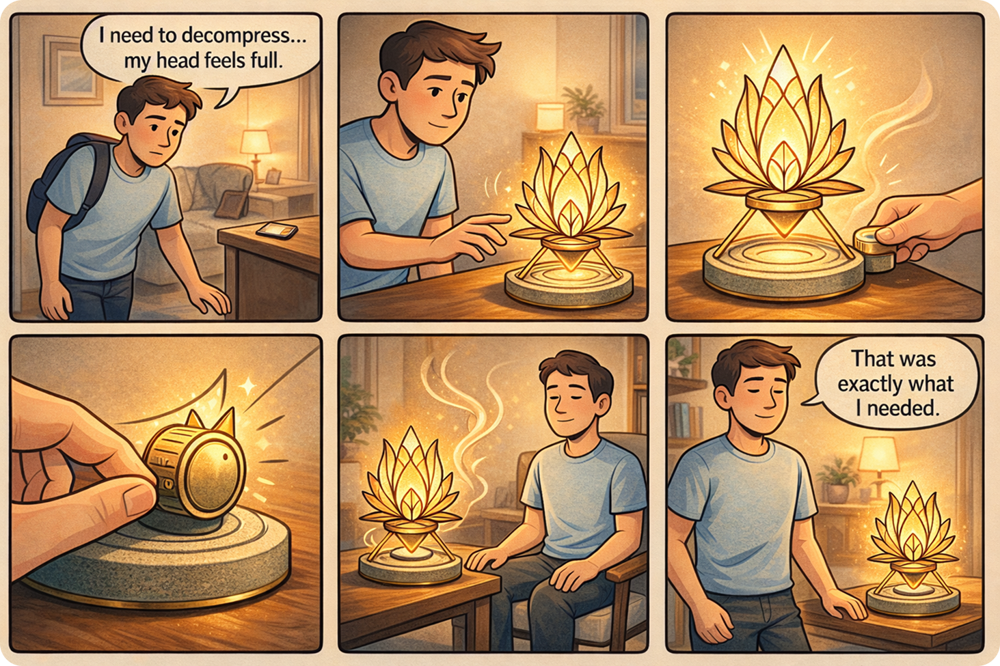

Behavior Design + Human Foundations
Meditation Device Innovation
A concept exploring calm technology, ritual formation, and physical interaction design to support sustainable meditation habits.

Overview
Many people want to meditate more consistently, but struggle to turn intention into routine. Existing apps often rely on notifications and screen-based experiences, which can feel at odds with the calm and presence meditation is meant to create.
This project explored how a dedicated physical device could support meditation in a more grounded, intentional, and habit-forming way.
The Problem
Meditation is easy to value in theory, but hard to sustain in daily life. People face friction around starting, remembering, and staying consistent. Digital tools may help with access, but they can also add distraction, dependence on screens, or a feeling of pressure.
The challenge was to design an experience that encourages meditation without feeling demanding, noisy, or overly gamified.
Design Challenge
How might a physical device help people build a meditation habit in a way that feels calm, tangible, and sustainable?
Research & Inspiration
The project drew from behavior design principles, habit formation research, and examples of ritual-based product experiences. I examined how triggers, friction reduction, physical cues, and emotional tone influence whether a habit feels natural enough to repeat.
Low Friction Matters
The easier it is to begin, the more likely a meditation session becomes part of a daily routine.
Physical Cues Support Ritual
Tangible interaction can create stronger behavioral anchors than a purely app-based prompt.
Calm Beats Pressure
A successful experience should invite repetition gently rather than rely on guilt, streaks, or performance pressure.
Concept Direction
The final concept centered on a dedicated meditation object designed to feel calming, simple, and inviting. Instead of pushing users through complex flows, the device emphasized physical ritual, ambient feedback, and an intentional beginning to the practice.
The experience focused on reducing activation energy and helping users associate meditation with a consistent visual and tactile cue.
Experience Principles
- Make the first step feel immediate and intuitive
- Use physical interaction to reinforce routine
- Reduce cognitive load and screen dependency
- Create a calm emotional tone throughout the experience
- Support repetition without over-optimization or pressure
Prototype & Storytelling
I translated the concept into visual exploration, storyboard moments, and prototype thinking to show how the device might fit into a daily routine. The work focused not only on interface behavior, but also on the emotional pacing of the experience.
This helped frame the product as more than an object. It became a behavior-support tool designed around ritual, presence, and ease.

Outcome
The project expanded my thinking around the relationship between physical products, emotional design, and habit formation. It also demonstrated how UX can move beyond screens into experiences shaped by touch, environment, and repeated behavior.
Reflection
This concept pushed me to design for subtlety rather than feature density. It reinforced the importance of designing for how people feel before, during, and after an experience, especially when the goal is to support calm, consistency, and long-term behavior change.